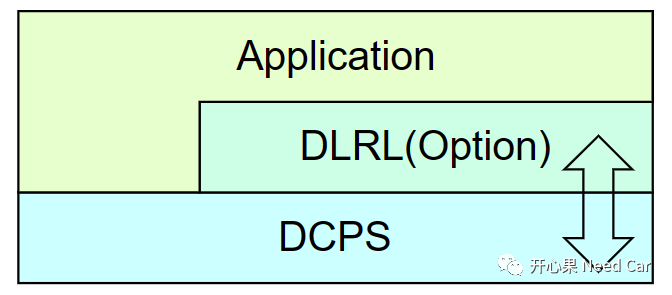
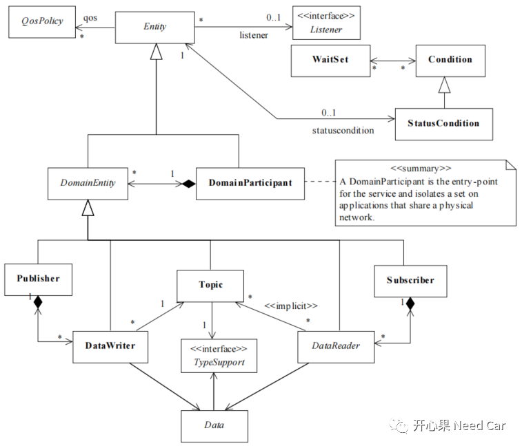
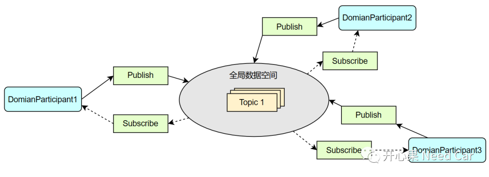

开心果 Need Car · 2023-02-19T07:58:00+08:00 · 微信原文
关于DDS（Data Distribution Service ，数据分发服务），之前，基于开源MICRO-XRCE-DDS，跑过Demo，可以参考前文DDS开发笔记：基于Ubuntu20.4跑micro-xrce-dds（一）。本文，我们认识一下DDS以及DCPS（Data-Centric Publish-Subscribe ，以数据为中心的发布订阅模型）。
1、DDS概述
DDS是一个以数据为中心的中间件协议，位于应用层和操作系统之间。DDS采用发布（Publish）/订阅（Subscribe）通信模式进行实时、高效的数据分发，同时，丰富的QoS（Quality of Service ，服务品质）策略，可满足分布式实时通信的要求。
如果用一句话概括DDS协议的目的，当属规范中的那句经典：“Efficient and Robust Delivery of the Right Information to the Right Place at the Right Time.”
虽然DDS早已在其它工控领域成熟应用，但是，DDS在汽车领域的应用时间并不长。2018年，Autosar组织才将其纳入AP（Adaptive Platform）标准。对于CP（Classic Platform）标准，目前并不支持DDS，如果要在CP架构中支持DDS，可以通过CDD（Complex Device Driver，复杂驱动）实现，但是，这会降低软件的移植性。
DDS主要由DCPS和DLRL（Data Local Reconstruction Layer，数据本地重构层）两部分组成：
DCPS：处理数据的订阅、发布，应用层利用该层进行数据交互。
DLRL：位于DCPS之上，抽象下层服务，并建立映射关系，此层级可选。
DCPS、DLRL、Application三者之间的关系，如下所示：

2、DCPS
DCPS由域（Domian）、参与者（Participant）、发布者（Publisher）、订阅者（Subscriber）、数据写入者（DataWriter）、数据读取者（DataReader）、主题（Topic）、监听器（Listener）等实体（Entity）组成，它们之间的关联关系如下所示：

（一）Domian
域是DDS的基本结构，是一个通信平面，由唯一DomianID标识。只有在同一个域内的通信实体才能通信（交互数据）。不同域的应用实体，不能通信。
（二）DomianParticipant
DomianParticipant是服务的入口点，应用程序如果要发布、订阅数据，首先，要获取DomianParticipant。只有获取DomianParticipant以后，方能创建、删除或者管理实体（eg：Topic、Publisher、Subscriber等）。
（三）Publisher
用来获取发布数据，并将其发布到对应的域中。Publisher作为发布方，可以包含一个或者多个DataWriter。
（四）Subscriber
接收Publisher发布的数据，并将其传递给对应的上层应用实体。至少包含一个DataReader。
（五）Topic
Topic主要由Name（名称）和Type（类型）构成，本质是网络中待传输的数据。
TopicName：是一个字符串，且在Domian内唯一标识；
TopicType：数据类型定义，每个主题类型可以指定对应的Key，可以用于区分相同Topic的不同实例。
DCPS通信的模型中，DataWriter和DataReader的Topic必须一致，才能建立连接。
（六）DataWriter
上层的应用程序如果要发送数据，需要通过DataWriter，将特定的Topic写入指定类型的接口。DataWriter对数据编码，通过Publisher传输。一个DataWriter必须和一个Topic绑定。
（七）DataReader
Subscriber通过DataReader从绑定的Topic中获取数据，然后传递给应用程序。一个DataReader可以绑定多个Topic。注意：数据的发布/订阅要使用相同的QoS，数据信息才能按预期行为交互。
在DCPS模型中，不同节点之间在一个虚拟的全局数据空间内交互信息。在此全局数据空间内，各节点通过订阅、发布的方式交互信息，这使得各节点之间的通信方式灵活多变，通信方式包括：点对点、点对多、多对多，如下所示：

往期精彩回顾
Autosar EcuM：APP由RUN到POST_RUN浅析